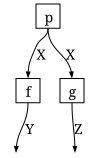

Markov categories as a GATlab theory
Simon Frost
- Overview
- What is a Markov category?
- Setup
- Free expressions
- FinStoch as a model
- Evaluating expressions
- The Markov axiom in FinStoch
- Summary
- References
Overview
MarkovCategories.jl states the operations on finite stochastic kernels of FiniteKernels.jl (whose “Finite stochastic kernels” vignette introduces them) as a GATlab theory, so that Catlab’s symbolic expressions, wiring diagrams and @instance mechanism apply to conditional probability tables (Patterson et al. 2022). This vignette shows the theory hierarchy, builds free (symbolic) string-diagram expressions, evaluates them in FinStoch, and checks the Markov axiom numerically.
What is a Markov category?
A Markov category (Fritz 2020), whose copy-discard fragment is the CD category of (Cho and Jacobs 2019), is a symmetric monoidal category $(\mathcal{C}, \otimes, I)$ in which every object $X$ carries a commutative comonoid
\[\Delta_X : X \to X \otimes X, \qquad !_X : X \to I,\]
compatible with the tensor product, and such that discarding is natural: $f \cdot !_Y = !_X$ for every morphism $f : X \to Y$. Morphisms are thought of as stochastic maps; $\Delta$ copies a value and $!$ forgets it. Copying is deliberately not required to be natural, because for a stochastic $f$, “sample once and copy” ($f \cdot \Delta_Y$) differs from “sample twice” ($\Delta_X \cdot (f \otimes f)$). A symmetric monoidal category in which both $\Delta$ and $!$ are natural is cartesian – this is Fox’s theorem (Fox 1976) – and there every morphism is deterministic. The same axioms are stated in Lean in Mathlib’s CopyDiscardCategory and MarkovCategory (The mathlib Community 2020), which the proofs/ development of FiniteKernels.jl follows.
MarkovCategories.jl expresses this hierarchy with GATlab theories, reusing Catlab’s monoidal-category theories so that Catlab’s expression and wiring-diagram tooling applies unchanged:
| theory | adds |
|---|---|
ThSymmetricMonoidalCategory (Catlab) | otimes, munit, braid |
ThCopyDiscardCategory = ThMonoidalCategoryWithDiagonals (Catlab) | mcopy, delete and the comonoid and coherence axioms |
ThMarkovCategory (this package) | naturality of delete |
ThCartesianCategory (Catlab) | naturality of mcopy as well |
Setup
using MarkovCategories
using CatlabThMarkovCategoryMarkovCategories.ThMarkovCategoryThe theory carries all the axioms of its parents; the last one is the Markov axiom. (Source-location comments are dropped from the printout.)
for line in split(sprint(show, ThMarkovCategory.Meta.theory), '\n')
occursin("#=", line) || println(line)
endGAT(ThMarkovCategory):
Ob::TYPE ⊣ []
Hom(dom, codom)::TYPE ⊣ [dom::Ob, codom::Ob]
compose(f, g)::Hom(a, c) ⊣ [a::Ob, b::Ob, c::Ob, f::Hom(a, b), g::Hom(b, c)]
(assoc := compose(compose(f, g), h) == compose(f, compose(g, h))) ⊣ [a::Ob, b::Ob, c::Ob, d::Ob, f::Hom(a, b), g::Hom(b, c), h::Hom(c, d)]
id(a)::Hom(a, a) ⊣ [a::Ob]
(idl := compose(id(a), f) == f) ⊣ [a::Ob, b::Ob, f::Hom(a, b)]
(idr := compose(f, id(b)) == f) ⊣ [a::Ob, b::Ob, f::Hom(a, b)]
otimes(A, B)::Ob ⊣ [A::Ob, B::Ob]
otimes(f, g)::Hom(otimes(A, C), otimes(B, D)) ⊣ [A::Ob, B::Ob, C::Ob, D::Ob, f::Hom(A, B), g::Hom(C, D)]
munit()::Ob ⊣ []
(otimes(otimes(A, B), C) == otimes(A, otimes(B, C))) ⊣ [A::Ob, B::Ob, C::Ob]
(otimes(munit(), A) == A) ⊣ [A::Ob]
(otimes(A, munit()) == A) ⊣ [A::Ob]
(otimes(otimes(f, g), h) == otimes(f, otimes(g, h))) ⊣ [A::Ob, B::Ob, C::Ob, X::Ob, Y::Ob, Z::Ob, f::Hom(A, X), g::Hom(B, Y), h::Hom(C, Z)]
(otimes(id(munit()), f) == f) ⊣ [A::Ob, B::Ob, f::Hom(A, B)]
(otimes(f, id(munit())) == f) ⊣ [A::Ob, B::Ob, f::Hom(A, B)]
(compose(otimes(f, g), otimes(h, k)) == otimes(compose(f, h), compose(g, k))) ⊣ [A::Ob, B::Ob, C::Ob, X::Ob, Y::Ob, Z::Ob, f::Hom(A, B), h::Hom(B, C), g::Hom(X, Y), k::Hom(Y, Z)]
(id(otimes(A, B)) == otimes(id(A), id(B))) ⊣ [A::Ob, B::Ob]
braid(A, B)::Hom(otimes(A, B), otimes(B, A)) ⊣ [A::Ob, B::Ob]
(compose(braid(A, B), braid(B, A)) == id(otimes(A, B))) ⊣ [A::Ob, B::Ob]
(braid(A, otimes(B, C)) == compose(otimes(braid(A, B), id(C)), otimes(id(B), braid(A, C)))) ⊣ [A::Ob, B::Ob, C::Ob]
(braid(otimes(A, B), C) == compose(otimes(id(A), braid(B, C)), otimes(braid(A, C), id(B)))) ⊣ [A::Ob, B::Ob, C::Ob]
(braid(A, munit()) == id(A)) ⊣ [A::Ob]
(braid(munit(), A) == id(A)) ⊣ [A::Ob]
(compose(otimes(f, g), braid(B, D)) == compose(braid(A, C), otimes(g, f))) ⊣ [A::Ob, B::Ob, C::Ob, D::Ob, f::Hom(A, B), g::Hom(C, D)]
mcopy(A)::Hom(A, otimes(A, A)) ⊣ [A::Ob]
delete(A)::Hom(A, munit()) ⊣ [A::Ob]
(compose(mcopy(A), otimes(mcopy(A), id(A))) == compose(mcopy(A), otimes(id(A), mcopy(A)))) ⊣ [A::Ob]
(compose(mcopy(A), otimes(delete(A), id(A))) == id(A)) ⊣ [A::Ob]
(compose(mcopy(A), otimes(id(A), delete(A))) == id(A)) ⊣ [A::Ob]
(compose(mcopy(A), braid(A, A)) == mcopy(A)) ⊣ [A::Ob]
(mcopy(otimes(A, B)) == compose(otimes(mcopy(A), mcopy(B)), otimes(otimes(id(A), braid(A, B)), id(B)))) ⊣ [A::Ob, B::Ob]
(delete(otimes(A, B)) == otimes(delete(A), delete(B))) ⊣ [A::Ob, B::Ob]
(mcopy(munit()) == id(munit())) ⊣ []
(delete(munit()) == id(munit())) ⊣ []
(compose(f, delete(B)) == delete(A)) ⊣ [A::Ob, B::Ob, f::Hom(A, B)]Free expressions
FreeMarkovCategory is the symbolic model of ThMarkovCategory, built with Catlab’s @symbolic_model in the same way as FreeSymmetricMonoidalCategory. Objects and generating morphisms are declared by name, and the operations build expressions with composition and tensor normalised to be strictly associative and unital.
X, Y, Z = Ob(FreeMarkovCategory, :X, :Y, :Z)
f = Hom(:f, X, Y)
g = Hom(:g, X, Z)
p = Hom(:p, munit(FreeMarkovCategory.Ob), X)p: I → XA fan-out, in which one value of X feeds both f and g:
fanout = compose(mcopy(X), otimes(f, g))mcopy{X}⋅(f⊗g): X → Y⊗Zdom(fanout), codom(fanout)(X, otimes(Y,Z))Expressions have Unicode and LaTeX renderings:
show_unicode(fanout)mcopy{X}⋅(f⊗g)show_latex(fanout)\Delta_{X} \cdot \left(f \otimes g\right)Catlab can turn an expression into a wiring diagram (copies are drawn as a wire fanning out and deletions as a wire ending), and lay it out as TikZ or Graphviz:
wd = to_wiring_diagram(compose(p, fanout))
nboxes(wd), nwires(wd)(3, 4)using Catlab.Graphics
using Logging: NullLogger, with_logger
# Catlab warns that the optional Convex/SCS port layout is unavailable; the
# fixed layout is fine here.
tikz = with_logger(NullLogger()) do
to_tikz(compose(p, fanout); labels=true)
end
lines = split(sprint(Catlab.Graphics.TikZ.pprint, tikz), '\n')
println(join(lines[1:min(end, 12)], '\n'), "\n...")\usepackage{amssymb}
\usetikzlibrary{calc}
\usetikzlibrary{shapes.geometric}
\usetikzlibrary{decorations.markings}
\begin{tikzpicture}[unit length/.code={{\newdimen\tikzunit}\setlength{\tikzunit}{#1}},unit length=4mm,x=\tikzunit,y=\tikzunit,semithick,box/.style={rectangle,draw,solid,rounded corners},junction/.style={circle,draw,fill,inner sep=0},outer box/.style={draw=none},wire/.style={draw,postaction={decorate},decoration={markings,mark=at position 0.5 with {#1}}}]
\node[outer box,minimum width=12.5\tikzunit,minimum height=7\tikzunit] (root) at (0,0) {};
\node[box,minimum size=2\tikzunit] (n1) at (-3.25,0) {$p$};
\node[junction,minimum size=0.5\tikzunit] (n2) at (0,0) {};
\node[box,minimum size=2\tikzunit] (n3) at (3.25,1.5) {$f$};
\node[box,minimum size=2\tikzunit] (n4) at (3.25,-1.5) {$g$};
\path[wire] (n2.-30) to[out=-30,in=-180] (n4.west);
\path[wire] (n2.30) to[out=30,in=-180] (n3.west);
...The preceding block shows generated TikZ source. This cell renders the Graphviz drawing itself, rather than printing the graph object’s type:
to_graphviz(wd; labels=true)
FinStoch as a model
The finite stochastic category is registered with @instance ThMarkovCategory{FiniteSpace, FiniteKernel}, so every operation in the theory hierarchy dispatches on spaces and kernels, including the operator aliases:
SX = FiniteSpace(:X, [:x0, :x1])
SY = FiniteSpace(:Y, [:y0, :y1, :y2])
SZ = FiniteSpace(:Z, [:z0, :z1])
k = cpt(factors(SX)[1], factors(SY)[1], [0.7 0.2 0.1; 0.1 0.3 0.6])
h = deterministic(SX, SZ, x -> x == :x0 ? :z0 : :z1)
Δ(SX) ⋅ (k ⊗ h) == compose(mcopy(SX), otimes(k, h))trueEvaluating expressions
evaluate(expr, generators) interprets a free expression in FinStoch by the structure-preserving functor determined by the images of the generators (Catlab’s functor with the FinStoch instance supplying every non-generator node). Generators may be keyed by name or by expression.
prior = state(SX, [0.3, 0.7])
gens = Dict(:X => SX, :Y => SY, :Z => SZ, :f => k, :g => h, :p => prior)
evaluate(compose(p, fanout), gens)FiniteKernel{Float64}(I → Y{y0,y1,y2} ⊗ Z{z0,z1})
()
y0,z0 0.21
y1,z0 0.06
y2,z0 0.03
y0,z1 0.07
y1,z1 0.21
y2,z1 0.42The result is exactly the direct computation:
evaluate(compose(p, fanout), gens) ≈ compose(prior, mcopy(SX), otimes(k, h))trueA chain $X \to Y \to Z$ written as an expression and as a matrix product:
l = cpt(factors(SY)[1], factors(SZ)[1], [0.9 0.1; 0.5 0.5; 0.2 0.8])
chain = compose(Hom(:k, X, Y), Hom(:l, Y, Z))
direct = compose(k, l)
evaluate(chain, Dict(:X => SX, :Y => SY, :Z => SZ, :k => k, :l => l)) ≈ direct,
kernel_matrix(direct) ≈ kernel_matrix(l) * kernel_matrix(k)(true, true)Generators without an image raise a typed error:
try
evaluate(chain, Dict(:X => SX, :Y => SY, :Z => SZ, :k => k))
catch err
showerror(stdout, err)
endUnboundGeneratorError: no kernel or space bound to generator :lThe Markov axiom in FinStoch
Because the instance is a model of ThMarkovCategory, the axioms hold numerically. Naturality of discard holds for every kernel built by the public constructors, since they are normalised:
evaluate(compose(f, delete(Y)), gens) ≈ evaluate(delete(X), gens)trueNaturality of copy, the extra cartesian axiom, holds for the deterministic h but not for the stochastic k:
copy_natural(m) = compose(m, mcopy(codom(m))) ≈ compose(mcopy(dom(m)), otimes(m, m))
copy_natural(h), copy_natural(k)(true, false)This is the formal content of “copy once is not two samples” from the FiniteKernels.jl vignette, and the reason Bayesian-network semantics must live in a Markov category rather than a cartesian one.
Summary
ThMarkovCategory is Catlab’s ThMonoidalCategoryWithDiagonals plus the single axiom that discarding is natural; FreeMarkovCategory builds string-diagram expressions over that theory, and the FinStoch @instance makes the same operations run on conditional probability tables, so evaluate is an honest functor from expressions to kernels. Naturality of copy, the extra axiom that would make the category cartesian, holds only for deterministic kernels, which is why Bayesian-network semantics need a Markov category. CategoricalBayesianNetworks.jl compiles the ACSet structures supplied by BayesianNetworks.jl into these expressions. The ordinary model and inference packages remain independent of Catlab and this categorical adapter.
References
Cho, Kenta, and Bart Jacobs. 2019. “Disintegration and Bayesian Inversion via String Diagrams.” Mathematical Structures in Computer Science 29 (7): 938–71. https://doi.org/10.1017/S0960129518000488.
Fox, Thomas. 1976. “Coalgebras and Cartesian Categories.” Communications in Algebra 4 (7): 665–67. https://doi.org/10.1080/00927877608822127.
Fritz, Tobias. 2020. “A Synthetic Approach to Markov Kernels, Conditional Independence and Theorems on Sufficient Statistics.” Advances in Mathematics 370: 107239. https://doi.org/10.1016/j.aim.2020.107239.
Patterson, Evan, Owen Lynch, and James Fairbanks. 2022. “Categorical Data Structures for Technical Computing.” Compositionality 4 (5). https://doi.org/10.32408/compositionality-4-5.
The mathlib Community. 2020. “The Lean Mathematical Library.” Proceedings of the 9th ACM SIGPLAN International Conference on Certified Programs and Proofs (CPP 2020), 367–81. https://doi.org/10.1145/3372885.3373824.